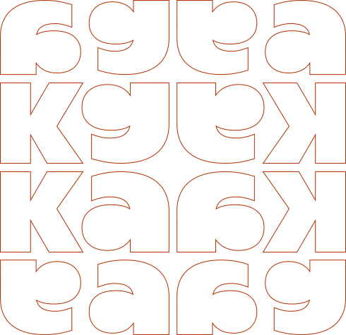

Business Design & IA
No dia a dia, a IA acelera a construção de soluções, mas nem sempre ajuda a definir o que realmente importa.
Ao longo de um dia, vamos usar business design e IA como laboratório para investigar problemas, construir caminhos e tomar decisões mais claras dentro das organizações. Com menos resposta pronta e mais leitura crítica da realidade.
Entender o que está em disputa.
Partimos de um cenário real para investigar o problema, o contexto de negócio e os impactos que a IA pode gerar quando entra como parte da solução.
Abrir caminhos com critério.
A partir do contexto, o grupo explora possibilidades, combina repertório de business design e IA e começa a dar forma a alternativas viáveis.
Escolher onde a IA faz sentido.
As ideias são tensionadas até a escolha de uma direção principal. O foco está em explicitar trade-offs, riscos e valor real para o negócio.
Transformar decisão em proposta.
A decisão ganha forma. O grupo estrutura uma solução visível, sustentável e comunicável, conectando experiência, tecnologia e impacto.
Continuar a conversa fora da mesa.
Encerramos o encontro em um ambiente mais aberto, com happy hour, troca entre participantes e fortalecimento das conexões criadas ao longo do dia.
Motivos para participar
Tomar decisões com mais contexto.
Você passa a enxergar além da interface e entende como negócio, operação, tecnologia e comportamento influenciam o que vale construir. Isso ajuda a sair da opinião solta e tomar decisões com mais critério.
Usar IA sem virar operador de ferramenta.
Em vez de depender de prompt pronto ou solução genérica, você aprende a usar IA como apoio para investigar, organizar ideias, testar caminhos e construir propostas melhores.
Defender propostas com mais clareza.
O encontro ajuda a transformar percepção em argumento. Você pratica como explicar escolhas, explicitar trade-offs e conectar suas decisões ao que importa para o negócio.
Construir conexões que duram além do dia.
O presencial cria espaço para pensar junto, testar ideias, ouvir outras perspectivas e perceber que muita gente está tentando resolver problemas parecidos. E o happy hour existe justamente para a conversa não acabar quando a atividade termina.
O que você vai aprender?

Ler problemas de negócio
Aprenda a sair da demanda solta para entender contexto, restrições, interesses e critérios que realmente orientam uma decisão.
Usar IA com intenção
Explore formas de aplicar IA como apoio à investigação, construção e síntese, sem transformar tecnologia em solução automática.
Construir propostas viáveis
Transforme possibilidades em caminhos mais claros, conectando experiência, operação, valor percebido e impacto para o negócio.
Defender decisões com clareza
Pratique como explicitar trade-offs, sustentar escolhas e comunicar o valor de uma proposta para diferentes pessoas da organização.
Facilitadores
Contamos com os melhores profissionais para te ensinar.


Gus Aragon
Idealizador do Estúdio Kata e Líder de estratégia de produto

Will Diniz
Idealizador do Estúdio Kata e Designer Sênior de Produto
O conteúdo já está sendo totalmente aplicável aqui. Eu já estou conseguindo aplicar no meu trabalho, às vezes nem direto no projeto, mas ajudando outras pessoas com os métodos que vocês passaram.
Queremos que acesso também faça parte do projeto. Porque construir repertório, conexão e espaço de troca não deveria depender apenas de condição financeira.
Para solicitar a bolsa, entre em contato e conte brevemente sobre você, seu contexto atual e qual modalidade faz sentido para o seu momento.
Solicitar bolsaAlunos fundadores
Oferecemos bolsas para pessoas que participaram da nossa primeira turma e ajudaram a construir os primeiros passos da Kata.
É uma forma de reconhecer quem esteve com a gente desde o início e manter essa comunidade próxima das próximas iniciativas.
Fundo de bolsas
Oferecemos bolsas de 30% para ampliar o acesso.
Se você faz parte de grupos historicamente sub-representados no mercado ou está em um momento de transição profissional, queremos que você esteja com a gente. Também consideramos candidaturas de pessoas com renda familiar mensal de até R$ 4.000 por pessoa.
Acreditamos que diversidade não é discurso, é construção ativa. Por isso, abrimos esse caminho de acesso ao curso.
Informações adicionais
A realização do mini-intensivo está condicionada à formação de uma turma mínima de participantes.
Caso esse número não seja atingido, a Kata se reserva no direito de reagendar ou cancelar o evento. Os participantes serão comunicados previamente e poderão optar pela devolução integral do valor pago ou pela transferência da inscrição para uma nova data.